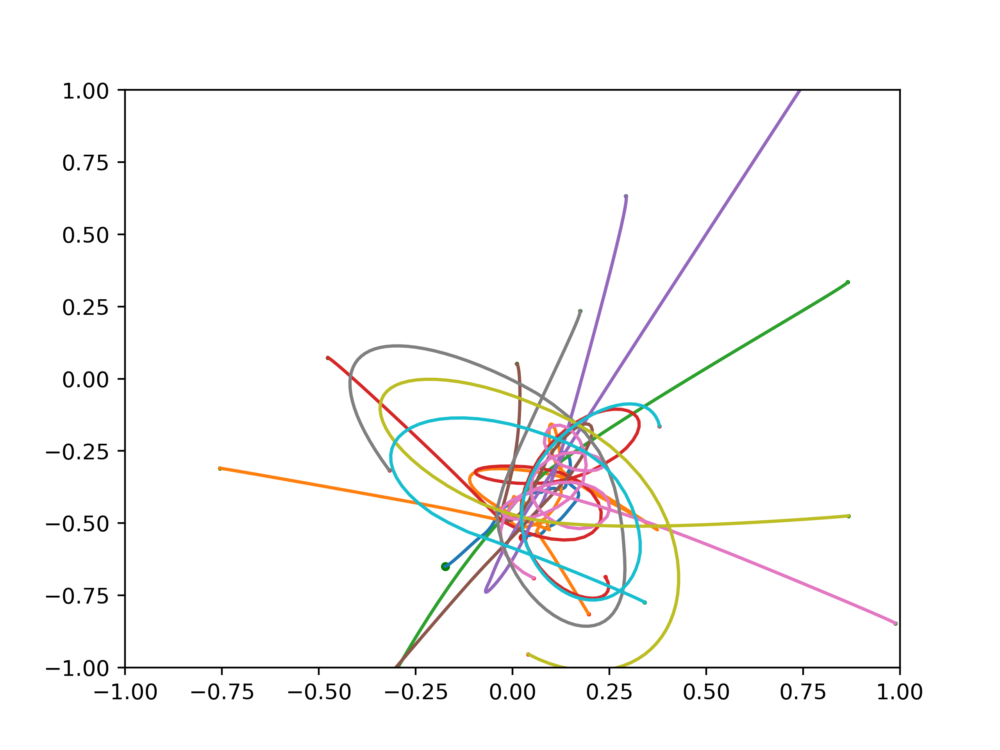
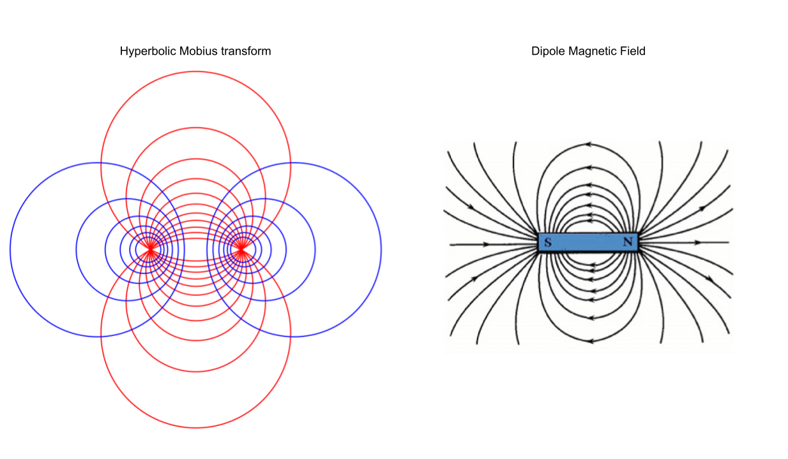

Space Log
Recently, I've been watching loads of cool space videos, especially those from Astrum. This has me feeling inspired to try coding up some of the interesting phenomena seen in space. The simplest example is just coding up a planetary simulator using gravity, which I have done before and is honestly very easy. To add complexity, we can start to add more complex features to the simulator. Here is a list of things I can think of:
- Gravity simulation
- Magnetic dynamics (i.e. simulating magnetospheres)
- Collision detection
- Particle dynamics (such as formation of asteroids after collisions)
- Heat dynamics
- Individual planet dynamics (features like what composes a planet, etc)
- Time and space warping such as around black holes
- Intractivity for the user (creating orbital paths/game mechanics)
A number of these are very ambitious and we can see that there really is no limit to the amount of detail we can include. In this blog post, I will walk through some of the features mentioned above and how I implemented them, as well as giving lots of cool visualizations of the code. I will switch between Python and C++ depending on the computational complexity of each task and use visualization either through custom OpenGL in the C++ case or matplotlib in the Python case.
Gravity N-body Simulation
Math
Gravity between two planets with masses \(m_1, m_2\) has force: $$F_g = G \frac{m_1 m_2}{r^2}$$ where \(r\) is the distance between them and \(G\) is the universal graviational constant. Let's represent the positions as our \(N\) bodies as two vectors \(x(t), y(t)\) and the masses as a vector \(m(t)\). First, we need to compute all distances between each point. Let's figure out a clever way to do this with linear algebra. Firstly, using streaming, we can express the \(N \times N\) matrices \(\Delta x, \Delta y\) of differences in positions as the difference between a column and a row vector: $$\Delta x = x - x^T, \Delta y = y - y^T$$ where \(x^T\) is the transpose. Then, the matrix of squared distances \(R_2(t)\) is given by $$R_2 = (\Delta x)^2 + (\Delta y)^2.$$ We also need a matrix of products of each pair of masses. This can just be computed as an outer product: $$M = m \cdot m^T$$ Note that if no bodies are added to the system \(M\) is constant and only needs to be computed once. Finally, the matrix of forces is just: $$F = G M \oslash R_2,$$ where \(\oslash\) denotes componentwise division and I'm using it because it looks cool. Note that the force will become infinite in the diagonal entires which are zero in \(R_2\). In this case, the force can just be set to 0. Finally, the force on a paticular planet is given by $$F_p = \sum_{p' \text{planet}} F_{p, p'} (p' - p).$$ If we let \(f_x, f_y\) be the component vectors of the forces, then, $$f_x = \text{sum_rows}(F \odot \Delta x), f_y = \text{sum_rows}(F \odot \Delta y)$$
Results
Here is an example of the paths of 10 different planets with one big planet (big green dot) shown. Green dots show initial start point and red dots shown end point.

Here is an example of a cool orbit where I put one small planet with a mass of \(1\) at coordinates \((-0.5, -0.5)\) with a velocity of \((0.1, 0.0)\) and a big planet at the origin with a mass of \(10\). We can see that a repeating pattern emerges:
Another cool example I found out when I played with these sorts of simulations when I was younger is placing planets on concentric circles. For example, in the video below I put planets on a circle equally spaced with velocities tangent to the cericle. This creates a "trochoid" pattern!
What if we put a circle inside another circle? We get a "hypotrochoid" which is the shape you get by revolving a circle with a pen at one point on it around another circle.
These shapes are familiar if you played with a spirograph as a kid. Also, this plot reminded me of the one sub focus album cover:

Magnetic Dynamics
This is one area where I really have no idea what I'm doing. The first step is understanding what magnetic fields lines are, how they work, and the equations they are modelled by. Then, we can start to contstruct some rudimentary simulations of such field lines, hopefully.
Maxwell's Equations
I will first give my explanation of each of Maxwell's equations, which I am learning on the fly. I will give my intuition for them, any connections to prior math I know, and try to write the formulas with explanations in a less disgusting notation than physics notation.
1. Gauss's Law
Gauss's law states that the net electrical flux around a surface is equal to the total charge enclosed by the volume. This reminds me a lot of the residue theorem from complex analysis: in order to measure a quantity (flux in this case) around a boundary, we just sum up poles (charges in this case).
Equation
$$\int_{\delta \Omega} E \cdot dS = \frac{1}{\epsilon_0} \int_\Omega \rho dV,$$ the left hand sideis a surface integral over the boundary and right is a volume integral over the interior. \(E\) is the electrical field, \(\rho\) is the magnetic density at each point and \(\epsilon_0\) is a constant.
In a simpler form, suppose we \(n\) electrical charge sources \(\rho_1, ..., \rho_n\), in the region \(\Omega\). Then, $$\int_{\delta \Omega} E \cdot dS = \frac{\rho_1 + \dots + \rho_n}{\epsilon_0}.$$
2. Gauss's Law for Magnetism
Gauss's law for magnetism is the analogue of Gauss's law above but for magnetic, not electric fields. It states that all magnetic field lines form closed loops that may pass through infinity, i.e., magnetic fields orginate from dipoles and monopoles do not exist. In particular, the total magnetic flux through a surface is zero. Contrast this with case of electric fields in law 1, where we can have arbitrary charges inside the surface and arbitrary flux.
This reminds me of Mobius transforms on the Riemann sphere from complex analysis. In particular, it is useful in complex analysis to consider a line as a closed loop that connects up at infinity. This is encapsulated simply by the Riemann sphere. Mobius transforms send "clircles" (circles + circles at infinity) to clircles, so it is "structure preserving" where the particular structure people care about is angles (orthogonal clircles are mapped to orthogonal clircles). The images below visually depict this connection. 
Equation
$$\int_{\delta \Omega} B \cdot dS = 0,$$ where \(B\) is the magnetic field. This law is nice and simple!
3. Faraday's Law
Faraday's Law is more complicated that Gauss's laws. The latter two laws are only concerned with magnetism/electricity on their own. Faraday's law formulates how magnetic and electric fields interact and, in some sense, generate one another. The gif below from Wikipedia is useful for understanding Farday's law:

Faraday's law states that The electrical force around a closed loop encapsulating a surface is equal to the negative of the rate of change of the magnetic flux through the surface. This is a mess a first glance, but it kind of makes sense when you look at the picture above. In paricular, as we change the current through the "solenoid" (spiral wire), it induces a change in the magnetic field through the solenoid. Faraday's law applies to each cross sectiona "slice" of the solenoid. Finally, the change in magnetic flux also induces a charge through any loop of wire passing through the magnetic field, such as the one shown on the right side.
Equation
$$\int_{\delta \Sigma} E \cdot d\ell = -\frac{d}{dt} \int_\Sigma B\text{ } dA,$$ where \(\Sigma\) is a surface (not a volume like \(\Omega\) above). The left hand side is a line integral around the boundary of \(\Sigma\) which I think of as the electrical flux or capactiy of the boundary of \(\Sigma\). The right side is the rate of change of magnetic flux through the surface \(\Sigma\) and the integral is an area integral.
4. Ampere's Law with Maxwell's Addition
Faraday's law gives us an expression for the "electrical flux" around the boundary of a surface in terms of rates of change of quantities related to the magnetic field inside the surface. In the other direction, we have Ampere's law, which gives an expression for the "magnetic flux" around the boundary of a surface in terms of rates of changes of quantities from the electrical field inside the surface (plus an additional term by Maxwell). Ampere's original rule stated that the electric current through a surface is proportional to the magnetic field along the boundary of the surface. The full rule adds a "displacement term," a displacement current measures the rate of change of the electric current. The full rule thus states that the sum of the electric and displacement current throughout a surface is proportional to the magnetic field along the boundary.
Equation
$$\int_{\delta \Sigma} B \cdot d\ell = \mu_0 (\int_\Sigma J\text{ } dA + \epsilon_0 \frac{d}{dt} \int_\Sigma E\text{ }dA),$$ where \(\mu_0\) is a constant and \(J\) is current inside \(\Sigma\). The first term on the right is the net current and the last term is the net displacement current, introduced by Maxwell. As we will see in the next section, this term allowed Maxwell to model electromagnetic waves as system of two second order differential equations!
Deriving EM Waves from Maxwell
A derivation of electro-magnetic wave's orthogonal dynamics from Maxwell's equations can be found here. The essential idea is that when we in a vacuum with no charges, the charge integral on the right of Gauss's first law is just zero and the electric current term in the Ampere-Maxwell equation is also zero. This makes the first two Gauss laws identical but for the magnetic and electric fields and the last two laws are reverse analogues of one-another in terms of magnetism/electricity. We can derive a set of second order equations from these four simplified equations (the electromagnetic wave equations)!